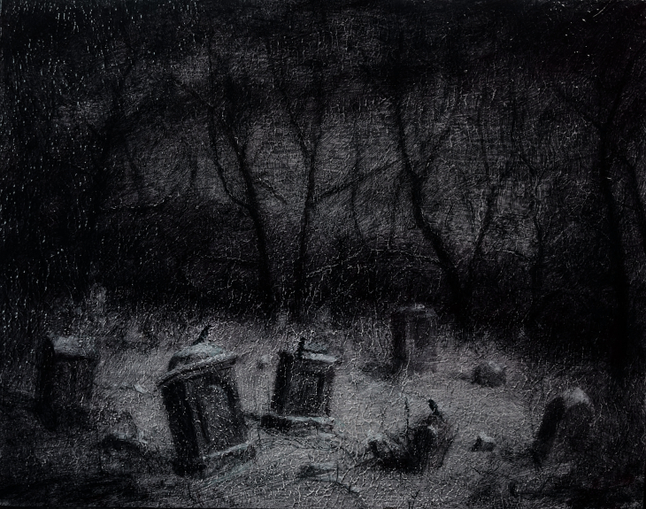
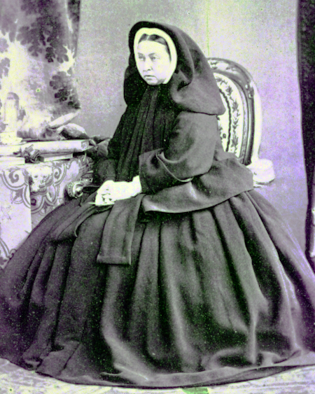

Inaugural Essay

Correspondence
WUTHERING.UK
P.O. Box 1302
Grand Marais, MN, 55604
USA
 January, 2024
January, 2024
But first something about the Dark Muse
 All at sea with the Dark Muse
All at sea with the Dark Muse
To begin
Light snow drifts gently down from low clouds draped over a misty boreal forest. Deer in their grey winter coats process through the fir and spruce. Ravens and crows dolefully croak and caw back and forth. And I burn a daytime candle. Such an ambience to convey my thoughts about my Dark Muse1 muse: Any of the nine sister goddesses in Greek mythology presiding over music, literature, and arts, or a state of deep thought or abstraction, e.g., to enter a muse over a poem, or a source of inspiration, e.g., She is my muse. .
Do you have an affinity for things on the gloomy side? Do you find dreamy what they find dreary … like when an overcast day brings on a strangely sanguine melancholy … or a stormy night is magnificent in a frightening and thrilling sort of way? Is twilight like a strange reprieve freeing your senses and deepen your thoughts? Perhaps you’ve paused to gaze transfixed upon an old, abandoned cemetery, or a lonely, nondescript landscape. And of course you are somewhere between panic and nausea by attempts at happy-clappy, sunny-cheery. You prefer candlelight over artificial light, old architecture over new, the genial disorder of wild nature over predictably orderly gardens. If you do live in a city, you gravitate to the “old town.” Spectacular is ho-hum, but all things subtle and veiled are magnetic. And wouldn’t it be grand if every month (or week!) we celebrated Halloween? If yes to any of this, you might understand what I’m trying to say here.
 Transfixed by an abandoned graveyard: octonimoes@DeviantArtThe first elephant I should at least slightly shift from the very centre of the room is the modern goth subculture2 …described here as well as anywhere. In very short, I believe they, like many, surely sense dark, but for whatever reasons only want to express it, explore it very narrowly through goth music and fashion. Lots more about why goth seems to skip the Dark Muse later… , along with all the gothic horror fright memes—vampires, witches, demons, nasty mean this, campy evil that. Yes, my Dark Muse would hopefully include, be akin to what is today called goth and gothic, but I hope to go deeper and more elemental and speak to your “inner goth.” There is natural dark, the darkness nature provides. Contrast with human-made dark, the symbolisms with which we attempt to emulate, decorate, magnify natural dark. Right up front: My version of dark is not meant to shock or frighten. My Dark Muse contains nothing cruel nor evil nor sinister nor satanic3 As philosopher and psychologist John Vervaeke said in describing the modern crisis of anxiety and dysphoria, “Horror is the aesthetic of when you feel like you’re losing your grip on reality.” Nothing to gain with horror memes. Not going there… . Not the Star Wars “dark side,” not dark barbarism à la Heart of Darkness, and not the psychic dark described by Freud or Jung. I’m after something more subtle, discriminating, and inward-personal. To me dark is sublime. And so I hearken back to a golden era when dark was the cultural currency, to be sure, the early nineteenth century, a time when key poets (e.g. Poe, the Brontës) showed us how triste and Stygian can lead to subtlety and sublimity4 Indeed, sublimity. More on Edmund Burke’s (as well as Bertrand Russell’s) false, “they don’t get it at all” tedium on sublimity later. In short, sublime is what we may find beyond mere beauty, touching what Dostoevsky is saying here: There are seconds, they only come five or six at a time, and you suddenly feel the presence of eternal harmony fully achieved. It is nothing earthly; not that it is heavenly, but man cannot endure it in his earthly state. One must change physically or die. The feeling is clear and indisputable. As if you suddenly sense the whole of nature and suddenly say: yes, this is true. This is not tenderheartedness, but simply joy. … Perhaps awe instead of joy? Again, much more as we go along… . I mean a dark that one will not outgrow, rather, that sustains. There should be no “aging out of the scene,” rather, a continued deepening and widening and transcendence for one’s entire life.
 No, Klaus, don't do it!
No, Klaus, don't do it!
Another ox gored is my rejection of modern dumbed-down American street English, which has permeated modern society—virtually worldwide. Basically, I mean to sound more erudite, sophisticated, intellectual with my sort of past-century British-feeling English. Why? Simply because the English of the early-nineteenth century was like a thoroughbred race horse, sleek and powerful and capable of amazingly deep and expressive things; whilst modern American street English is beggared, destitute, impoverished and requires a buy-in to a particularly base, ignorant, crude and aggressive hipster Zeitgeist. Which I repudiate, not going there—although I’m sure I will occasionally slip up. Back in the day people were more genteel, thoughtful, fine-spoken. They could express themselves with utter sublimity. They understood the human need for holiness, grandeur, the eternal. Compare this with the modernists we see everywhere today who believe being coarse, crass, base, and irreverent is somehow progress… But on the other hand, it might just be that I’ve finally succumbed to the influence of all those schoolmarms back in my distant childhood who had us read Romantic Era lit, holding up “wordy,” other-century English as superior. They were right, you know. And yes, I’ll occasionally drop foreign as well as Latin words and phrases, my foreign language being German… You have been warned.
Dark like me?
For me life seems empty, insipid, weak without a strong current of the
Dark Muse. It is as if life cannot be properly understood without the
dark perspective. But is this nature or nurture? A quick litmus
test. I present here a short, simple poem from my main darkness
benefactress, the poetess who stands at the centre of everything I
mean to say about dark, namely, Emily Jane Brontë. 5
Oddly enough, I’ve never read her Wuthering Heights and do
not intend to. However, her poetry I read continually, discovering new
things, gleaning deeper insights each time. See here for a quick
biography.

Fall, leaves, fall; die, flowers, away;
Lengthen night and shorten day;
Every leaf speaks bliss to me
Fluttering from the autumn tree.
I shall smile when wreaths of snow
Blossom where the rose should grow;
I shall sing when night’s decay
Ushers in a drearier day.
Here EB is direct, blunt even. But now we know. Either she speaks to something in you, or you are part of the majority who finds it—weird, abnormal, morbid, overwrought, puerile, even sick or evil. To be sure, my dark penchant gets mostly deer-in-headlights responses, if not outright hostility. The openly hostile see my dark druthers as morose, morbid, as “wallowing in self-pity” or “dwelling on the negative.” I beg to differ…
Here is something a bit lighter but the same basic idea from
Christina Rossetti 6
See here for a bio. She is considered by many Britain’s
most prolific poet.

Fade tender lily,
Fade O crimson rose,
Fade every flower
Sweetest flower that blows.
Go chilly Autumn,
Come O Winter cold;
Let the green things die away
Into common mould.
Birth follows hard on death,
Life on withering:
Hasten, we shall come the sooner
Back to pleasant Spring.
Rossetti would carefully exposit a dark fatalism, ending with hope bound in humble expectancy. I like to think these two English poetesses are expressing an informed, matured melancholy that bespeaks a deeper understanding of life.
And another poem7 Yes, poems. as the Dark Muse seems to find its best, most concentrated expression through poetry. Much more on why mainly poetry delivers the ineffable of darkness later. , here Longfellow’s Snow-flakes from a collection published in 1863
Out of the bosom of the Air,
Out of the cloud-folds of her garments shaken,
Over the woodlands brown and bare,
Over the harvest-fields forsaken,
Silent, and soft, and slow
Descends the snow.
Even as our cloudy fancies take
Suddenly shape in some divine expression,
Even as the troubled heart doth make
In the white countenance confession,
The troubled sky reveals
The grief it feels.
This is the poem of the air,
Slowly in silent syllables recorded;
This is the secret of despair,
Long in its cloudy bosom hoarded,
Now whispered and revealed
To wood and field.
Here I see Longfellow8 Go here for a quick biography. HWL was not typically dark, rather, a popular “uplifting” poet with a big audience. That’s what makes this selection so unique for me. looking to the natural world and poetising9 The idea of poetising, the poetisation of nature and life was central to the Romantic Movement. It parallels the long-standing belief that we humans explain ourselves through, embed our lives in narratives, and in olden times nature was the stage. , to be sure, darkly. As a result, agents of mental affliction and depression—despair, grief, misery—are transformed into more equanimous states of sadness and melancholy hopefully resulting in a higher emotional maturity. In some paradoxical way, nature and darkness as witnesses eventually transition into healers. As if the initial agony and sorrow are a ravaging cancer or virus that eventually fade into remission, but can never entirely be eliminated whilst on Earth.
This poetising of nature dark and mystical was the modus operandi of my select nineteenth-century poets10 Dark as a teacher. Novalis, who we’ll meet later, described in exceptionally moving poetic terms the night as a soother and healer. . Rather than avoid, they embraced the dark, something we today in our brightly-lit, cordoned-off world might consider counter-intuitive, if not wrong-headed. I contend we have lost this subtle art of moving hardship, tragedy, emotional crises into a stasis remission melancholy. Too often we are failures at finding a modus vivendi11 modus vivendi: An arrangement or agreement allowing conflicting parties to coexist peacefully, either indefinitely or until a final settlement is reached, or (literally) a way of living. with the trials and tribulations of life as our ancestors once did.
Surely we suffer poorly. All we may ever do is usher the initially searing, inescapable pain to a dull ache in the backdrop of time. Though I would say this was better understood in the past than today. They did not attempt to contain, disguise, systematise or process greif, rather, greif was faced directly, pain was shared, empathy a way of life. And so emotional space was allotted, support communal, organic, and natural. Strikingly different from today was their acceptance of doom and fate, two concepts antithetical to our dynamic, positivist, self-determining, fix-everthing-quickly modern attitudes.
Consider Queen Victoria12
Queen Victoria in mourning black ca. 1862.

who wore mourning black from the time
of her husband Prince Albert’s death in 1861 till the end of her life
in 1901. Likewise, Amélie of Leuchtenberg who upon losing her husband
Pedro I of Brazil in 1834, wore mourning black until her death
in 1873. In those days death was properly, officially mourned. No one
chivvied mourners along with their grief and sadness. Contrast this
with today’s all-too-prevalent disassociation, the confused,
disorganised quasi-denial and suppression we moderns show towards
death13
Is there anything worse than the so-called five stages of
grief or the Kübler-Ross model? Grief as an emotional malfunction
to be systematically reduced, fixed, corrected? Alas.
. For the early nineteenth century, poetising life’s train
of tragedy was depression deconstruction as a life skill. The slings
and arrows of human existence found conjunction with nature,
darkness, and faith through poetry, thereby highlighting,
elevating our uniquely human experience on Earth, casting a gossamer
of sublimity over our natural existence like no other generation
before or since. Theirs was the deepest exploration of our true
humanness that I know, and, thus, something I must pursue.
But why Dark?
But still, why Dark14 Allow me German noun capitalisation for poetic emphasis. ? Dark speaks to me, but, again, why? Lack of a clear and simple answer begs a wordier one. Dark remains mysterious—no matter how I try to imbibe or express it. Dark is something instinctual, cathartic, evocative, centring for me. Dark is more than the lack of light. Dark can lead the imagination to riot. The moss, lichens, and mushrooms in the secretive shadows of the forest incite so much more than the spectacular sunny vista across the forest valley. The fresh-cut rose elicits one response, but the faded rose another—deeper but for me never dysphoric. Here is something from my novel Emily of Wolkeld15 Lots more about my novel as we go.
The new cut rose: Initially beautiful, thereafter dried and desiccated, lost forever its initial beauty and fragrance. Once affording a glimpse of perfection, only reminiscent thereafter. Beauty always some fleeting illusion or madness? Moreover its eclipse, joining, leading the shadows of our relentless doom, our march to the grave. And though I live in this momentary brilliance, I still search my night shore; for until now I have known only of beauty’s haunting rumour, of love’s promise, those slightest quickenings of things necessarily rare and formerly peripheral. Yes, in this moment I may have some of love’s bliss, but I know I will cherish with a larger, more mature heart the memory thereof, an echo sent down life’s long, clouded memory hall as the true and lasting blessing.
Yes, there might have been a dinner invite for me back in the day.
Let’s see another example of get-it-or-don’t, this time a poem from
Emily Elizabeth Dickinson16
See here for a quick biography.

of Amherst, Massachusetts,
her There’s a certain slant of light17
In the third line, Heft means weight, heaviness; importance,
influence; or (archaic) the greater part or bulk of something.
There’s a certain Slant of light,
Winter Afternoons —
That oppresses, like the Heft
Of Cathedral Tunes —
Heavenly Hurt, it gives us —
We can find no scar,
But internal difference —
Where the Meanings, are —
None may teach it – Any —
’Tis the seal Despair —
An imperial affliction
Sent us of the Air —
When it comes, the Landscape listens —
Shadows – hold their breath —
When it goes, ’tis like the Distance
On the look of Death —
Indeed. That last line includes Death capitalised18 Again, Dickinson often employed the capitalising of nouns for poetic emphasis. . Now I must emphasise these nineteenth-century artists understood death much differently than we do today. Unfortunately, this capitalised, past-century view of Death has become opaque, lost. I hope to rediscover it. I’ll start by stating their understanding of Death was integral to their understanding of nature…
Nature and Death in the nineteenth century
The main points being:
- True nature is birth, growth, deterioration, and death, full stop…
- …ergo, nature is not a place, inside or out, rather, a state of being…
- …ergo, no degrees of nature, rather, nature constant ubiquitous…
- …ergo, death is an integral part of true nature
- The increasingly extra-natural, quasi-immortal human
- Direct exposure to nature dominant versus “managing ecosystems”
I hold that our modern, twenty-first-century understanding of nature
is very different than that of early-nineteenth-century poets such as
the Haworth and Amherst Emilies19
My shorthand for Emily Brontë and Emily Dickinson is based on
their towns of origin — Haworth, West Yorkshire, for the former and
Amherst, Massachusetts, for the latter.
and their contemporaries. Just
considering our indoor living environments today, a typical modern
building is more like a sealed space station plopped down on a
hostile alien planet compared to the simpler, more primitive
structures of the not-so-distant past. Quite literally, the Brontës’
Haworth parsonage, built in 1778 out of local stone and wood and clay,
had more in common with human shelters from one, two thousand years
previous than with our modern suburban homes only some two hundred
years later20
Deep indoors deep in the forest…

. Hence, in just the past two to three hundred
years a very steep, vertical gradient or differential has grown
between indoors and outdoors. This, in turn, has brought us to see
nature more as a place separate and outside, cut off, away from our
artificial, high-tech, controlled and regulated modern indoor
spaces21
Is it not ironic how nearly every lifeform that attempts to
share our human environments uninvited are considered invasive,
noxious vermin, pests to which we have developed almost hysterical
revulsion?
… which, in turn, has lead us to rate outdoors
nature on continua of relative wildness and remoteness from our
sealed-off, self-contained, humans-only environments.
 Homespun and one of its sources. Original art from Steve-Lease (DeviantArt.com)
Homespun and one of its sources. Original art from Steve-Lease (DeviantArt.com)
Even as late as my own childhood the term homespun was in use to indicate a poor, unsophisticated person, a country bumkin, a hick from the sticks. The term referred to a person’s clothing being homemade from locally-sourced, hand-spun and woven materials such as linen and wool rather than factory-made retail clothing. The early-nineteenth century Brontëan Yorkshire would have seen the majority of the villagers in homespun, all but a few garments not hand-tailored bespoke22 Cotton was rapidly becoming a global commodity, both cotton and wool fabrics eventually being produced in steam-powered factories as the Industrial Age reached its inflexion point of growth. . And of course food was entirely from local production. Hence, a person’s daily resources were overwhelmingly local, a small bit perhaps coming from a nearby market town, while only the most exotic items (e.g., a clock) would have come from farther away. Today, however, this supply pyramid is completely flipped, as nearly everything comes from far (far!) away (e.g. China) while only a few personal items would be from a local or even regional source23 In any modern (non-organic Amazon Whole Foods-style) supermarket I’m sure less that 1% of the food items come from a truly local source. Nearly everything is shipped in from often far afar. . And so in Brontëan times the surrounding land was agriculturally domesticated, a working partner. Contrast this with today’s urban-suburban populations hardly ever in contact with farmers or their farms. Nor do we know anything about where our clothing came from. Today, nature as “the land,” as our immediate provider, has been completely abstracted into concepts such as ecosystems, which implies we are now removed observers controlling nature as if it were a mechanical object.
No doubt we have always made a distinction between being inside a shelter and going outside/Th into the so-called /elements. But starting some six to ten thousand years ago we began to give up aboriginal nomadic life and its direct daily contact with said elements in order to establish permanent city-states supported by mass monoculture agriculture. And so indoor environments in ever-expanding urban centres became evermore physically removed, walled off from the wild natural world, became increasingly self-contained, all-encompassing, self-referencing, thus, recursively derivative24 …e.g., what is a flower garden but a derivative, a mock-up of an original place out in the wilds, albeit with the pretty bits super-amplified idealised, the not-so-pleasant bits left, weeded out? .
Along with this growing separation came mentalities, narratives increasingly based indoors and extra-natural 25 How often is a Shakespeare character out communing with nature? Never?… . Being indoors meant we no longer were in direct contact with the nature spirits all around; instead, praying to an extra-natural, off-world monotheistic God in architectural showcase churches26 Churches were typically built in the centre of a town or city on the highest ground. I once heard that to this day no building in Vienna may be built taller than the tower of St. Stephen’s Cathedral. . Western architecture seemed to reach a fantastical aesthetic crescendo in the Victorian nineteenth century27 …with dark, dense, dramatic Neo-Gothic as a leading style. Indeed, seemingly all nineteenth century styles were “revivalist-nostalgic” (Greek, Gothic, Italianate, Elizabethan, Queen Anne, etc.), perhaps a hearkening back to times more integrated with nature, with shallower gradients between indoors and outdoors? , coinciding with an exponential growth in urban population which had just passed an inflection point. Today the steepness of our indoor-outdoor gradient has increased even more since Victorian times … resulting in a humanity more abstracted extra-natural than ever. How then may we, a species seemingly capable of great adaptability28 Adaptability leading to, A) a permanent (beneficial) alteration, or B) a temporary adjustment, allowance for less-that-optimal conditions, supposing an eventual return to optimal conditions. We humans, I contend, are B-adaptable. This means we are certainly no barometer species or “canary in the coal mine” of our own well-being. We routinely ignore our fellow canary-like humans, allowing them to suffer and die, their warnings unheeded. , objectively measure our separation from nature? What has domestic, urban, indoor living done to our brains, our sense of belonging to the planet, to one another? How can we even begin to trace back the many rabbit hole bifurcations, the chain of derivatives we’ve taken for all these centuries down, out, and away from nature pure? To be sure, we have demonstrated a collective will to make conditions better for us and us alone. We see our dominion over, abstraction away, separation from nature as fate, as destiny. After all, our population doubling in less than fifty years to eight billion29 Human population grew 60% between 1800 and 1900, and 260% between 1900 and 2000. says something to our intention and ability to dominate. And we seem to have adapted our collective human psyche, our narratives to this separation30 Modern human narratives come at us as thousands upon thousands of fictional novels, films, plays, while aboriginal peoples had myth and legends timeless and unchanging. That alone… . But is this sustainable? All dark musings aside, many of us today have grown concerned over the question of sustainability, concerned about our long arc of estrangement from nature31 Is our relatively gradual separation from nature not a perfect example of the boiling frog metaphor? . Let me suggest a different understanding of nature, namely—
Nature is not a place inside or outside of our human spaces, rather, nature is everything going on everywhere. Nature as the myriad cycles of birth, growth, deterioration, and death going on everywhere.
I contend the Brontës, as well as other Romantic Era32 The term Romanticism originated is from the Latin romant, or, “in the Roman manner”, thus, not at all our current use of the word as a synonym of love. poets, sensed this pre-modern meaning of nature as beyond inside or outside. Yes, one went outside, out into the elements. But once back indoors, a Brontë was not so completely out of and above nature’s touch, influence, doom as we now fancy ourselves. Again, the cycles of birth, growth, deterioration, and death were happening everywhere sans emplacement 33 Consider how the Industrial Revolution created urban production landscapes vast and barren and completely outside of any sort of nature, spatial or otherwise—indeed, William Blake’s “satanic mills.” This was a change on a scale never before seen, a huge and sudden step away from the physical world being solely the purveyance of nature. Even when the individual left his house he was still deep within a massive concentration of extra-natural, human-exclusive activity. . Here again is Emily Brontë, her epic The night is darkening round me
The night is darkening round me,
The wild winds coldly blow;
But a tyrant spell has bound me,
And I cannot, cannot go.
The giant trees are bending
Their bare boughs weighed with snow;
The storm is fast descending,
And yet I cannot go.
Clouds beyond clouds above me,
Wastes beyond wastes below;
But nothing drear can move me;
I will not, cannot go.
Yes, she refers to the outdoors. She even refers to the wilds as “wastes”34 In those days wild, untouched places were often referred to as wastelands. and as drear. And yet she is transfixed, frozen to the spot—and I cannot, cannot go, as she says. Subjective terms like wastes and drear remind of the age-old attitude towards nature as a terrible, grim, inescapable master, a sponsor of disaster and death, hardly over which to wax poetic. But Romantic Era poets did just that, and to be sure, sublimely. Haworth Emily stopped, turned around, and stared directly into an enemy previously known as all-powerful and unforgiving, and in so doing she sensed something deep and found sublimity evoked. Then she brought to us in her lines of poetry a new way of being more human35 Contrast this inescapable nature back then with Hemingway’s twentieth-century nature. Sure, he went to relatively remote places to play the macho man. But if anything serious happened he could always have been airlifted out to receive modern medical care. The Romantic Era poets—whom he thought effete and sappy—were in nature always with no timeouts, no escape. Would Hemingway done all those macho-man things if he had had no backdoor or exit if things went wrong? .
With nature as countless cycles of birth, growth, deterioration, with death going on all around, the last two components, deterioration and death, must be understood beyond our mechanistic reductionist modern take of just physical breakage and malfunction36 Couple this “death as malfunction” with atheist nihilism for a completely soulless mechanical universe realism dumpster fire. . Especially death become Death, back in the day a quasi-spiritual force majeure. But no, deterioration and death aren’t what they used to be. It’s almost as if they were cordoned off—or at least under much greater human control than ever before. It’s as if through modern medicine we have begun to acquire a demi-godlike, proto-immortal veto power over physical demise. And with this control we have torn down, dismantled a great component of spirituality, namely the reckoning of one’s mortality with a deity. Where once was supposed a mortal, physical plane inferior an immortal, spiritual plane, we now would look only to the physical plane as exclusive. Alas…
Though for the meantime death remains an undeniable certainty. Death comes as it always has—from old age, fatal accident, or from deadly physical aggression or predation37 For critters, predators are other bigger critters. For humans, predators are—outside of war and homicidal aggression—all but exclusively bacteria and viruses. . But a completely different attitude arises when modern healthcare’s labyrinth of diagnoses, drugs, procedures and surgeries routinely thwart what was once all but certain, eventual demise. And so we’ve begun to lessen the mystery of Death, overturn fate and doom.
The days of our years are threescore years and ten; and if by reason of strength they be fourscore years, yet is their strength labour and sorrow; for it is soon cut off, and we fly away.
— Psalm 90:10
This is surely the old-fashioned take on death and its finalistic, absolute inevitability so resounding as to constantly shake and echo through life. Death as life’s backstop, container, timer, combinator, reaper38 Consider this goth version of the classic rock song. Had this been written in Brontëan times, it would have been no cheap, sentimental gimmick. .
What then if we start to take command of death’s agenda, rerouting death’s comings and goings? Psalm 90:10 is making the point that by no means are we guaranteed seventy or eighty years of life, and even if we get them they might not be that great. And yet we have grown to expect from the implicit promises of modern medical science a healthy, quality seventy, eighty, ninety, or even more years. And so modern medicine has disrupted the two last components of a nature ubiquitous cyclic, i.e., deterioration and death. Modern science has lessened the wallop of tragedy, weakened overall the doominess of doom by redefining life as so much organic machine circuitry, a mechanism that, in turn, is to be better and better repaired, maintained, improved against entropic wear-and-tear39 Consider the commonplace heart pacemaker, a device that literally commands the human heart with artificial electronic pulses. .
Let me relate a modern story to our new attitude towards death. My father, who has since passed away, lost his third wife to lung cancer caused inevitably by decades of smoking40 Ironically, both of his previous wives had likewise died from smoking-related illnesses. . But instead of accepting this, he became angry and accused her doctors of malpractice, threatening lawsuits. Nothing came of this, but I wondered why such an irrational outburst? I finally theorised that he had explicated from all the buzz of the various possible medical interventions—including their probabilities of success or failure—a hope that the death sentence of lung cancer could, should be beaten by some technology lurking in some corner of the modern medical labyrinth. Alas…
Back in the day, no one would have second-guessed death’s arrival to such an absurd degree. Human life was like a boat with shallow gunwales, the waves of death able to lap over at any time. But today the fourscore years spoken of in Psalms has all but become an expectation of, a guaranteed minimum—even to the extent that old age and death are increasingly spoken of as “diseases” we can and should defeat. Death as a nuisance, indeed. My father felt cheated when that three-, fourscore and more was not forthcoming. But as you may anticipate, I contend life is life only with death—death absolute and not easily theorised away. God must be somewhere in all this.
A sickly Anne Brontë41
Anne Brontë’s grave in Scarborough

Perhaps watch this on Anne’s last days in Scarborough.
on her final dying trip to Scarborough in
1849 had made a stop in York where she insisted on seeing the York
Minster. Upon gazing up at the great cathedral she said, “If finite
power can do this…” But then she was overcome with emotion and fell
silent. Anne was in a deep and personal death mindset of utter and
complete humility and reverence. Indeed, God was in her death42
In my novel Emily of Wolkeld, which I will eventually
discuss, I have a character saying yes, she would get in a time
machine and go back the Brontëan times. But what if you faced a
fifty-fifty chance of dying from a now curable, fixable condition? her
friend asks. Yes, she replies, I would trust my life, and trust my
death.
.
Death rises as Romanticism: Novalis
The world must be romanticised. In this way we will find again its primal meaning. Romanticising is nothing but raising to a higher power in a qualitative sense. In this process the lower Self becomes identified with a better Self … When I give a lofty meaning to the commonplace, a mysterious prestige to the usual, the dignity of the unknown to the known, an aura of infinity to the finite, then I am romanticising. For the higher, the unknown, the mystical, the infinite, the process is reversed—these are—expressed in terms of their logarithms by such a connection—they are–reduced to familiar terms.
—Novalis
This is a quote from43 …quoted from the third volume, Fragmente, of Novalis: Werke, Briefe, Dokumente; Verlag Lambert Schneider; 1957. the German nobleman Friedrich Leopold Freiherr (Baron) von Hardenberg (1772—1801), aka, Novalis, who is considered by academe to be the founder of the Romantic Movement! But most people don’t know that it was Novalis who started it all. Specifically, it was his prose-poem cycle entitled Hymns to the Night44 Allow me the abbreviation HTTN from here on. that set people around him off. And the gathering of German intellectuals in Jena, Thuringia, Germany, referred to as the Jena Set by Andrea Wulf in her Magnificent Rebels45 Magnificent Rebels, The First Romantics and the Invention of the Self by Andrea Wulf; 2022; Vintage Books. More about this flawed account shortly. rallied around Novalis, and subsequently tried to build on Hymns and Novalis’ romanticising poetising. What came to be known as Jena Romanticism46 See the Wikipedia explanation of Romanticism or German Romanticism. They’re as stiff and ultimately as clueless as any… eventually spread to eager circles and fertile grounds in Britain and the United States.
Alas, but here is where I become quite the iconoclast, primarily by insisting nearly everyone has got Romanticism wrong! Even the actual contemporaries around Novalis. Perhaps even Novalis himself! I posit that Novalis with his foundational HTTN took off in a straight line into the Dark Muse47 Soon will be discussed things dark from the eighteenth century. . Just reading HTTN, one cannot escape the sheer intensity of Novalis’ swoon-fest over Night and Death48 Try this George MacDonald translation as found in a publication from 1897. Amazing how obscure unknown the keynote address to the whole Romanticism convention has been. I’ll try at a better, annotated version soon. . Here’s a small taste
I feel the flow of
Death’s youth-giving flood;
To balsam and æther, it
Changes my blood!
I live all the daytime
In faith and in might:
And in holy rapture
I die every night.
and just before
What delight, what pleasure offers thy life, to outweigh the transports of Death? Wears not everything that inspirits us the livery of the Night? Thy mother, it is she brings thee forth, and to her thou owest all thy glory.
In my humble opinion, HTTN is one of the densest, purest attesting to the Dark Muse ever. As the legend tells, his inspiration came from being grief-stricken at the death of his fifteen-year-old fiancée Sophie von Kühn, to whose grave he pilgrimed for one hundred nights. The Jena Set writer Ludwig Tieck described the teenage Sophie as
Even as a child, she gave an impression which—because it was so gracious and spiritually lovely—we must call super-earthly or heavenly, while through this radiant and almost transparent countenance of hers we would be struck with the fear that it was too tender and delicately woven for this life, that it was death or immortality which looked at us so penetratingly from those shining eyes; and only too often a rapid withering motion turned our fear into an actual reality.
HTTN is trance, vision, most certainly not just the gymnastics of flipping the sacred to profane and profane to sacred as Novalis himself once described Romanticism. He journeyed into dark and came back with some of the purest dark ever.
John Keats’ sense of Beauty
Samuel Taylor Coleridge is generally accepted as the leading intellectualiser of Romanticism during its inception in Britain. Following is a Coleridge quote as good as any
…first, that two forces should be conceived which counteract each other by their essential nature; not only not in consequence of the accidental direction of each, but as prior to all direction, nay, as the primary forces from which the conditions of all possible directions are derivative and deducible: secondly, that these forces should be assumed to be both alike infinite, both alike indestructible… this one power with its two inherent indestructible yet counteracting forces, and the results or generations to which their inter-penetration gives existence, in the living principle and the process of our own self-consciousness.
Indeed, wordy intellectualisations are the usual approach for academics scrounging for copy. Then contrast this with what the English poet John Keats said in a 1817 letter to his brothers George and Thomas
…I mean Negative Capability, that is, when a man is capable of being in uncertainties, mysteries, doubts, without any irritable reaching after fact and reason—Coleridge, for instance, would let go by a fine isolated verisimilitude caught from the Penetralium of mystery, from being incapable of remaining content with half-knowledge. This pursued through volumes would perhaps take us no further than this, that with a great poet the sense of Beauty overcomes every other consideration, or rather obliterates all consideration.
Intellectualisations, great and lengthy, especially of the “Penetralium49 penetralium: (plural penetralia) the innermost (or most secret) part of a building; an inner sanctum; a sanctum sanctorum. of mystery,” can only become verisimilar50 verisimilar: having the appearance of truth. ramblings that get us nowhere, Keats is saying. But with a simple ode to Beauty the poet obviates, obliterates intellectualisations. Keats’ Negative Capability is about cognitive dissonance as a great and necessary burden the poet must carry, a process necessary for deeper understanding beyond neat and tidy piles of logical-seeming words. That is, to not immediately intellectualise, but to hold oneself in a counter-intuitive state of unresolved—just to see where it might lead. Here is the famed beginning of his “poetic romance” Endymion
A thing of beauty is a joy for ever:
Its loveliness increases; it will never
Pass into nothingness; but still will keep
A bower quiet for us, and a sleep
Full of sweet dreams, and health, and quiet breathing.
Therefore, on every morrow, are we wreathing
A flowery band to bind us to the earth,
Spite of despondence, of the inhuman dearth
Of noble natures, of the gloomy days,
Of all the unhealthy and o’er-darkened ways
Made for our searching: yes, in spite of all,
Some shape of beauty moves away the pall
From our dark spirits. Such the sun, the moon,
Trees old and young, sprouting a shady boon
For simple sheep; and such are daffodils
With the green world they live in; and clear rills
That for themselves a cooling covert make
’Gainst the hot season; the mid forest brake,
Rich with a sprinkling of fair musk-rose blooms:
And such too is the grandeur of the dooms
We have imagined for the mighty dead;
All lovely tales that we have heard or read:
An endless fountain of immortal drink,
Pouring unto us from the heaven’s brink.
Take that Coleridge, you brachial babbling braincase!
In the 2009 film Bright Star, a touching bio-drama about Keats, there is a scene where, speaking with his love interest Fanny Brawne, he says A poet is not at all poetical. In fact, he the most unpoetical thing in existence. He has no identity. He is continually filling some other body—the sun, the moon. He then says, Poetic craft is a carcass, a sham. If poetry does not come as naturally as leaves to a tree then it had better not come at all. And then Fanny says, I still don’t know how to work out a poem. To which Keats says,
A poem needs understanding through the senses. The point of diving in a lake is not immediately to swim to the shore but to be in the lake, to luxuriate in the sensation of water. You do not work the lake out. It is an experience beyond thought. Poetry soothes and emboldens the soul to accept mystery.
And thus, I would posit he, like I, did not see Romanticism as something needs bundling and explaining and stuck with labels and herded into categories. Time and time again I listen to or read a description of Romanticism and come away with the feeling the author understands nothing, rather, is simply stringing disparate bits and bobs together for some logical consistency. And so I say the intellectual prison yard in which academe has stuck Romanticism should be opened up, the guards soundly switched and run off, the prisoners let back out into the wide fields and deep woods.
Thriving versus surviving; top dog versus underdog
In his book The Genius of Instinct 51 The Genius of Instinct; Reclaim Mother Nature’s Tools for Enhancing Your Health, Happiness, Family, and Work by Hendrie Weisinger; 2009; Pearson Education, Inc. author and psychologist Hendrie Weisinger insists we are hard-wired by nature to seek out the best conditions in order to thrive, that any life other than one of maximal thriving is time and energy wasted. He uses the example of bats, which, according to research, have been observed to seek out human buildings, preferring them over natural homes such as rock outcrops, hollow trees, or caves. And in so doing, they enjoy advantages such as better body temperature regulation, lower infant mortality, less threat of predation. This may be true, but wait, haven’t these bats jumped outside of the original constraints where they once were completely integrated with nature? These advantaged bats are now in a state of trans-bat-ism. But is that a good thing? In the meantime the bats profit. But for nature as a whole? In effect, the bats have short-circuited their doom, their fate. And what are the consequences?
Perhaps bats doing better is not too much of an imbalance vis-a-vis the rest of their competitors and surrounding environment52 Here in woodsy Minnesota we haven’t noticed a shortage of mosquitoes, one of bats’ primary food sources. . And yet what happens when a species keeps thriving more and more, increasing its success statistics, stepping over, beyond any of the natural restrictions that real integration and harmony with nature would have required? Aren’t we humans Exhibit A of just such an out-of-control species? And so I ask, how can all this so-called thriving be good, end well? How can a dominant species like ours, which seems to be always “gaming the system,” evermore ingeniously and aggressively extra-natural, not eventually have to pay some price? Simply put, How can more and more people consuming more and more resources and energy, each of us fantasising about success and prosperity, not result in an eventual overshoot disaster?
Nature seems to have two and only two models: A) steady-state niche/stasis and B) exponential, dynamic growth. And whenever a species is not restricted to its tightly integrated niche, then exponential growth ensues—which will eventually hit an inflexion point and take off dramatically and uncontrollably towards an inevitable overshoot and crash.
To my mind, Emily Brontë was just this sort of hard-pressed little bat out in the wilds—colony-less, huddled in a hollow tree, barely eking out a marginal life. Here is her Plead for me
Why I have persevered to shun
The common paths that others run;
And on a strange road journeyed on
Heedless alike of Wealth and Power—
Of Glory’s wreath and Pleasure’s flower.
These once indeed seemed Beings divine,
And they perchance heard vows of mine
And saw my offerings on their shrine—
But, careless gifts are seldom prized,
And mine were worthily despised;
My Darling Pain that wounds and sears
And wrings a blessing out from tears
By deadening me to real cares;
And yet, a king—though prudence well
Have taught thy subject to rebel.
And am I wrong to worship where
Faith cannot doubt nor Hope despair,
Since my own soul can grant my prayer?
Speak, God of Visions, plead for me
And tell why I have chosen thee!
I consider this her ode to skipping the trans-human thrive scene of her day and striking out into some Beyond to commune with her God of Visions. Again, I must believe she was a little bat fluttering across the semi-wilderness moorland, as true an existential underdog as was still possible back then53 Compare with today’s outdoor adventurer with technical gear from REI, Patagonia, North Face, driving to government set-aside wilds in a four-wheel-drive Jeep Cherokee, consuming protein bars and electrolyte drinks, listening to music with earbuds, taking smart phone pictures and GoPro videos. Any mishaps? Call for immediate helicopter rescue on a satellite connection… At some point we’re just amateur Earth astronauts, no? When nature is in balance, all participants are underdogs to some degree. . Emily Brontë died of anorexia-induced malnutrition, contaminated water, tuberculosis — pick one, two, or all three—five months after her thirtieth birthday. She only saw the greater world outside of her tiny Haworth village and its surrounding hills for a few months54 A stay in Belgium to learn French and a short-lived gig in nearby Halifax as a governess. . Hers was a world with nothing modern as we know it, e.g., a cut on a toe could lead to an infection requiring amputation, or even worse.
And yet one might ask if her existence in the early nineteen century was really so very wild and rugged. Was she still not observing nature from civilization’s relative place of safety, thereby rendering her observations just as tainted, just as relative as ours today? I say no. Clearly our modern place of safety is maximal, as we of the twenty-first century float above cruel Nature on unprecedented levels of modern high-tech materialism55 We consume one hundred times the resources and energy per capita as one of our European ancestors from 1800. . Nonetheless, I contend hers was a unique vantage point, neither too exposed nor removed from elemental nature.
So often I am confronted with modern scoffers who would have us believe Romantic Era poets only knew nature from picnics held at garden-like country estates where dandies and their pampered ladies were attended by servants, as seen in the Hollywood film version of Jane Austen’s Emma
 Emma picnic in the harrowing wilds of England
Emma picnic in the harrowing wilds of England
or playful romps like Hollywood’s latest anachronistic redo of Emily Brontë depicting her rolling down a grassy slope in some domesticated country setting
 Fictional E.B. in a silly, carefree moment tumbling down a hill
Fictional E.B. in a silly, carefree moment tumbling down a hill(From the 2022 film Emily)
Again, for us moderns nature is a place, a location away from and diametrically opposite our modern interior spaces. Nature today is seen as this vast other place, the Great Outdoors. Then the farther afield from modern civilization we can go, the truer and more authentic nature supposedly becomes. And so we create a nature continuum whereby a trackless wilderness as far from civilization as possible is the truest nature, while hardly nature at all would be a ditch overgrown with weeds behind one of our triple-paned windowed, vinyl-siding-clad, forced-air-HVAC suburban houses. Nature can only be very wild, thus, very far away from the safety of space colony civilization. Writers like Ernest Hemingway and Jack London exploit these fright memes of nature as a distant, exotic, hostile place. Which is virtually identical to science fiction stories of hostile alien planets “conquered” by brave, intrepid astronauts. To be sure, many sci-fi depictions of alien worlds are simply off-Earth versions of the Klondike Yukon that London described.
No, my poets of the so-called Romantic Era were not pampered dandies and fine ladies strolling for a few odd bored minutes on manicured estate grounds. Nor were they any sort of beneficiaries of the “Age of Exploration” colonialism. My poets were mainly short-lived little bats in their crevasses and corners, as beaten and confused as any bats have ever been.
Eighteenth-century British dark
Though Britain was seeing dark decades before Novalis and Romanticism. As I do with Novalis and his HTTN, I can’t help but believe these eighteenth-century English principals were more sleepwalkers than any sort of intentional movement leaders. First came The Graveyard School of poetry full of doom and gloom56 We’ll look into doom more thoroughly in the future. Suffice it now to say doom is that condition whereby sins, however initially minor and insignificant, have lead to a snowballing of consequences unforeseen, typically multi-generational, always negative. , then just past mid-century the gothic romance novel load on more d&g, then by what might be called the Night School, which became the basis of my dark corner of Romanticism.57 More on what I mean by “my corner” very soon…
The Graveyard School
It was only a few decades into the eighteenth century when there
emerged in Britain a style of poetry which has since been named the
Graveyard School. My Exhibit A of Graveyard is Edward Young’s
epic-length The Complaint: or, Night-Thoughts on Life, Death, &
Immortality (or simply Night-Thoughts, ca. 1742-1745).58
From my 1853 copy
 Bursting with a grandiosity only poetry can access, Young relentlessly
spins out darkness and doom. To be sure, he is dark with a shudder,
full of fright memes meant to weigh down and ultimately defeat—if
taken seriously. A quick taste, s’il vous plaît
Bursting with a grandiosity only poetry can access, Young relentlessly
spins out darkness and doom. To be sure, he is dark with a shudder,
full of fright memes meant to weigh down and ultimately defeat—if
taken seriously. A quick taste, s’il vous plaît
"When the cock crew, he wept”—smote by that eye
Which looks on me, on all: that Power, who bids
This midnight sentinel, with clarion shrill
(Emblem of that which shall awake the dead),
Rouse souls from slumber, into thoughts of heaven.
Shall I too weep? Where then is fortitude?
And, fortitude abandon’d, where is man?
I know the terms on which he sees the light;
He that is born, is listed; life is war;
Eternal war with woe. Who bears it best,
Deserves it least…
…indeed, unrelenting doom and woe59
A woebegone maiden deep in the slings and arrows of her no
doubt cursed, doomed existence (from El Mundo ilustrado; 1879).
 . Typical of Graveyard
School, there is no hope, no escape, just the weight of an assumed
curse, then processions of lamentation to cliff edges and fated
tumbling thereoff
. Typical of Graveyard
School, there is no hope, no escape, just the weight of an assumed
curse, then processions of lamentation to cliff edges and fated
tumbling thereoff
Art, brainless Art! our furious charioteer…
…Drives headlong towards the precipice of death;
Death, most our dread; death thus more dreadful made:
Oh, what a riddle of absurdity!
or
From short (as usual) and disturb’d repose,
I wake: how happy they, who wake no more!
Yet that were vain, if dreams infest the grave.
I wake, emerging from a sea of dreams
Tumultuous; where my wreck’d desponding thought
From wave to wave of fancied misery
At random drove…
Of course every student of the Dark Muse should read Young’s Night-thoughts. And yet this over-the-top doom hyperbole eventually delivers even the most indulgent reader to incredulity. At some point it becomes farce, as when we might tell ghost stories at a social gathering quite dramatic convincing, but then returning to rationality, not take them seriously. Though Graveyard had a lighter side. For example, Thomas Gray’s Elegy Written in a Country Churchyard (1751). To be sure, the eulogising of the dead is a much older and well established genre, typically emphasising the qualities of the deceased over the dark abyss his grave might represent. While we’re not meant to survive Young’s world, Gray’s elegy of a lost friend is dark and fatalist and yet reverent faithful
Large was his bounty, and his soul sincere,
Heav’n did a recompense as largely send:
He gave to Mis’ry all he had, a tear,
He gain’d from Heav’n (’twas all he wish’d) a friend.
Here whatever negatives, sinister, morose, and doomy, may be swirling about, God in his heavenly domain has our backs. We may obsess wallow in the fatalism of mortal inevitabilities, but Gray doesn’t try to beat us down as much as did the hardcore Graveyard Schoolers. And yet with Graveyard Britain had arrived at a public exhibition of dark. At some point we must ask (setting aside the amateur historical social-psychology of academe), Is dark innate? Again I ask, Is dark nature or nurture? In my humble opinion, a great movement like Graveyard arrives unexpected, completely out of the blue, a natural, organic collective upwelling. Which begs the question, What rises to cultural and intellectual prominence in an age?60 …that is, in an past age not exposed to the science of modern public relations. See this about Edward Bernays and the birth of modern advertising and public relations. TL;DR: Since Bernays, no “movement” can be considered natural and organic. Obviously, there must be a foundation of social cohesion and integrity, a predominance of high cultural standards for a trend to be more than just what we see today, i.e., cultural hooliganism and opportunist, lowest-common-denominator pablum. To be sure, many of that era condemned gothic and Graveyard as subculture. But eventually came refinement, which I might call the Night School. Though intervening was the gothic novel .
The arrival of the gothic novel
Prose versus poetry. In the past poetry was seen in polite upper-class circles as the higher, the preferred, acceptable form of literature61 For example, Germany has long been referred to as the land of poets and thinkers (Das Land der Dichter und Denker). Intentionally absent is novelists. Although now novelists count as part of die Belletristik, i.e., schöngeistige Literatur or aesthetic literature. . Prose in the form of the novel62 Two terms, novel (English) and roman (French, German, etc. from the adjectival Roman, Roman-like) came to describe any long-form prose story-telling. , on the other hand, was not acceptable, seen as too revealing invasive personal, i.e., it is improper, unseemly, distasteful to expose even an imaginary person’s life details in such an open and revealing fashion. According to this attitude, it was a crude thing to so freely fantasise human goings-on in a fictitious way. Rather, literature must ennoble the human as a being created in the likeness of God, and not dwell on his mundanity and failings. After all, a novel was neither factual (e.g. a saint’s hagiography) nor high lyrical poetic (e.g., church hymn lyrics or Heldenlieder). A novel/roman was simply too plain-spoken, i.e., the unavoidable clarity (Klartext) inherent in non-poeticised descriptive writing invariably generated an undesirable ordinariness. And so it was in this mise en scène that the prose novel bumped along post-Medieval Age as a barely tolerated corruption of writing, as a regrettable parallel to poetry, consumed mainly by easily excited arriviste vulgarian middle-class women. And yet as the middle class grew in power and numbers, the novel came to the fore, especially in the eighteenth century.63 Ironically, the Novella, a long short-story format with no chapter breaks, was seemingly better tolerated in Germany.
Modern academe considers the novel The Castle of Otranto, A Gothic Story, appearing in its first edition in 1764, to be the official start of British gothic literature.64 One giveaway is gothic in the title. Perhaps read this overview of Gothic fiction. Written by the excentric, iconoclastic English nobleman Horace Walpole (1717 – 1797), Otranto is a melodrama set in sixteenth-century Naples offering the impressionable middle-class women of the day a big dose of darkness, doom, and woe. Walpole’s penchant for medievalism rode the always simmering nostalgic idealisation of the Medieval Age65 Walpole initially claimed Otranto to be a medieval manuscript he had discovered and translated when it was completely his own creation all along. , while the adjective gothic referred to medieval Gothic architecture.66 …although this is ironic since the actual label Gothic had been used pejoratively in the Renaissance alluding to the destructive barbarian Goths. Gothic “horror” was an instant hit, and other writers and influencers quickly joined in creating a full-on dark movement.67 The popularity of the gothic novel continued throughout the nineteenth and into the twentieth century primarily in the Romance genre. Among others, Frances Parkinson Keyes was a popular romance author who often wrote from a gothic perspective. Dragonwyck (1946) is a prime example of Hollywood does gothic romance. Once asked why his horror films were so popular, Alfred Hitchcock said the man on the street likes to dip his toe in the lake of horror occasionally.
 Wolf's Crag from Walter Scott's gothic The Bride of Lammermore
Wolf's Crag from Walter Scott's gothic The Bride of Lammermore
Above is an etching from a publication of Sir Walter Scott’s The Bride of Lammermore (1819). Consider the sheer visual density and heaviness of the scene (click on the image to be taken to a larger version). Whence, wherefore this heaviness, this portent? Predominant is nature dark, inhospitable, and threatening, the human-built castle primitive, isolated, and vulnerable, the riders miniscule, exposed. It is as if every single living cell—plant, animal, human—is clinging to life by a thread, and any dim green and blue hues of vegetation and sea are wholly irrelevant. The scene evokes threat, danger, dysphoria, something horrific just waiting to transpire. But again how, why? Why such darkness and what was (and still is) the appeal? Hitchcock tautologies aside, modern academe has offered theories about the socio-political-psychological landscape of the times, and yet these “experts” only wind up sounding supercilious and patronising from their modern triumphalist perches, as if they are searching for a disease to explain a malady, weakness to explain indulgence. No, indeed, dark, even when crude and heavy, predominates, arrests, mystifies, the appeal all the stronger for its recessive, ungraspable spherical symmetry. To be sure, this “coming out” of gothic in the eighteenth century was overwrought, overweight with its fright memes, but undeniably popular and onto something real about the inner human experience.
The night, the stars the moon…
As assuredly personal and original as Novalis’ Hymns to the Night was, Englishwoman Anna Laetitia Barbauld’s A Summer Evening’s Meditation had already appeared in 1773 praising the night in a similarly cherished, solemn way. Without deeper investigation I have no real idea if Barbauld’s Meditation started what I’m calling the Night School, but as a working theory, yes, she offered a new perspective to dark with an accessibility and maturity not seen in Graveyard or gothic horror. After a nod to Young’s Night-thoughts with a quote therefrom, One sun by day, by night ten thousand shine, Barbauld launches directly into her summer night and its canopy of stars…
Tis past! The sultry tyrant of the south
Has spent his short-liv’d rage; more grateful hours
Move silent on; the skies no more repel
The dazzled sight, but with mild maiden beams
Of temper’d light, invite the cherish’d eye
To wander o’er their sphere; where hung aloft
Dian’s bright crescent, like a silver bow
New strung in heaven, lifts high its beamy horns
Impatient for the night, and seems to push
Her brother down the sky. Fair Venus shines
E’en in the eye of day; with sweetest beam
Propitious shines, and shakes a trembling flood
Of soften’d radiance from her dewy locks.
The shadows spread apace; while meeken’d Eve
Her cheek yet warm with blushes, slow retires
Thro’ the Hesperian gardens of the west,
And shuts the gates of day. ’Tis now the hour
When Contemplation, from her sunless haunts,
No woe, no gloom-and-doom, rather, a relentless parade of visceral and natural dark hyperconductivity. Barbauld hauls us outdoors to partake, imbibe, behold. We are not obsessing on doom, rather, we are touched, moved to reflect in reverence—
…But are they silent all? or is there not
A tongue in every star that talks with man,
And wooes him to be wife; nor wooes in vain:
This dead of midnight is the noon of thought,
And wisdom mounts her zenith with the stars.
At this still hour the self-collected soul
Turns inward, and beholds a stranger there
Of high descent, and more than mortal rank;
An embryo God; a spark of fire divine,
Which must burn on for ages, when the sun,
(Fair transitory creature of a day!)
Has clos’d his golden eye, and wrap’d in shades
Forgets his wonted journey thro’ the east.
Night over day.68
And here’s some of my own doggerel, From a Grandniece To Her
Great-aunt At Her Great-uncle’s Funeral:
You see, dear Auntie,
Day is all supposes,
Night but only a few.
Night quietly closes
Day’s great to-do.
Lost on the Day,
I wait for deepest Night,
for Darkness and I must
Decline clamant Light.
Night a more expansive, passive, more nuanced
interim inviting deeper, more mature human introspection. Far distant,
cool and gentle are the myriad stars, unlike our single oversized and
often ruinous local star of day.
I mean to say this is my kind of dark, i.e., free of any campy fright devices. Most assuredly every protégé of the Dark Muse must read Barbauld’s lengthy masterpiece. Hers is an exposition of natural darkness, placing it far above the reproach of gothic horror detractors. Though Meditation was no doubt a singleton, a unicorn whose influence seemed to lay dormant for decades.69 …although Wordsworth would later mention Barbauld and Meditation as inspirational. One Barbauld biographer mentioned a trend of that time of ladies studying astronomy. But obviously Barbauld is waxing dark, not repeating facts about celestial bodies. Perusing her other poems, yes, she dwells on nature, sometimes in a dusky way, but addressing dark as she did with Meditation never again appeared so directly during her times. Today she is known as an influential social commentator, moralist, and educator, not as proto-Romantic. And so I must jump ahead some fifty years and bring in Brontëan poetry as a continuation of this Night School thread. Haworth Emily’s Stars is just one her many examples of Night School from someone who probably had never read nor heard of Barbauld’s Meditation. Exactly like Barbauld, in Stars Haworth Emily lauds the night and its starry sky
Thought followed thought, star followed star
Through boundless regions, on;
While one sweet influence, near and far,
Thrilled through, and proved us one!
Why did the morning dawn to break
So great, so pure, a spell;
And scorch with fire the tranquil cheek,
Where your cool radiance fell?
The night sky’s depth and expanse over the trammels of life during sunlight, indeed. And so the last two stanzas
Oh, stars, and dreams, and gentle night;
Oh, night and stars, return!
And hide me from the hostile light
That does not warm, but burn;
That drains the blood of suffering men;
Drinks tears, instead of dew;
Let me sleep through his blinding reign,
And only wake with you!
Night School redeems dark by pulling it out of the ostentatiousness, the gimmickry of Graveyard and gothic. Started by Barbauld, it was independently embraced by others. Let’s look at sister Anne Brontë’s Night
I love the silent hour of night,
For blissful dreams may then arise,
Revealing to my charmed sight
What may not bless my waking eyes.
And then a voice may meet my ear,
That death has silenced long ago;
And hope and rapture may appear
Instead of solitude and woe.
Cold in the grave for years has lain
The form it was my bliss to see;
And only dreams can bring again,
The darling of my heart to me.
Simpler, more measured was Anne’s poetry than her sister’s. And she includes the grave by eulogising either of her older sisters Maria or Elizabeth, or her mother, but again, sans drama.
This calmer, more introspective dark dominated the eighteenth century. And let us not forget the many poems devoted to the moon. Here is Anne’s Fluctuations
What though the Sun had left my sky;
To save me from despair
The blessed Moon arose on high,
And shone serenely there.
I watched her, with a tearful gaze,
Rise slowly o’er the hill,
While through the dim horizon’s haze
Her light gleamed faint and chill.
I thought such wan and lifeless beams
Could ne’er my heart repay
For the bright sun’s most transient gleams
That cheered me through the day:
But, as above that mist’s control
She rose, and brighter shone,
I felt her light upon my soul;
But now—that light is gone!
Thick vapours snatched her from my sight,
And I was darkling left,
All in the cold and gloomy night,
Of light and hope bereft:
Until, methought, a little star
Shone forth with trembling ray,
To cheer me with its light afar—
But that, too, passed away.
Anon, an earthly meteor blazed
The gloomy darkness through;
I smiled, yet trembled while I gazed—
But that soon vanished too!
And darker, drearier fell the night
Upon my spirit then;—
But what is that faint struggling light?
Is it the Moon again?
Kind Heaven! increase that silvery gleam
And bid these clouds depart,
And let her soft celestial beam
Restore my fainting heart!
Here we may imagine the youngest Brontë bowed if not weighed down by her earthly afflictions, cares, deprivations, but then in this lean, hungry, susceptible state caught in an emotional whirling, carried, borne up by the natural nighttime procession of sun to moon and stars. She speaks of her tearful gaze, her fainting heart, her spirits, her emotional exposure. She is a vulnerable ward of nature, but tenaciously pursuant of its subtleties. Indeed, back then it was always subtleties, delicate qualities found in nature by the vulnerable if not pathetic human, an exacting counting of seemingly modest blessings which then gained sublime ascendency.
If I wasn’t pledged to Emily, I might say Anne has an even finer take on dark than her older sister. I might dare to say Anne’s Christianity is more conventional, whereas Emily with her obvious thought-behind-thoughts mental state took a starker, more fatalist view of God. Anne humble, Emily defiant perhaps; nevertheless, the Dark Muse absolutely owned by these Brontës!
Just for some balance, let me mention another Night Schooler, namely, the Swiss poet Gottfried Keller. Again, he is even later by some three or four decades than the Brontës. Here is his Winternacht or Winter Night
Not a wingbeat went through the world;
silent and brilliant lay the white snow.
Not a puff of cloud hung in the starry canopy,
no wave surged in the torpid lake.
From the depths climbed a lake-tree,
to its crown encased in ice;
and upon its branches climbed the water nymph,
gazing up through the green ice.
There I stood upon the thin glass
that separated me from the black depths;
Close beneath my feet I saw
her white beauty, limb for limb.
With smothered sorrow she groped
here and there on the hard barrier.
Never will I will forget her dark expression;
always, always, shall it remain in my mind!
One of my favourites, I have always wondered what the man did with the rest of his life. Did he return to the lake trying to find his water nymph; or did he resign himself to his mortal and mundane life? In any event, the mystery and allure of a forest in deep winter night is undeniable. Such magic and mystery obviously could not have occurred in daylight.
With Night School, first, nature is dark, then human reflection upon that natural dark, i.e., no fake dark, no camp, no hyperbole. Just the deepest possible descriptions of the world in darkness bringing forth some of humanity’s finest insights.
Romanticism
Another great hulking elephant in the middle of the room is Romanticism. As I have not so subtly been hinting, what came to be known as Romanticism is, to a large degree, the labeling work of the herders, not the actual animals who never stopped to promote, package, or label themselves. I’m about the animals, not their herdsmen. And yet it is difficult to separate the two. Pull up an artist, musician, poet of that era (late eighteenth and throughout the nineteenth centuries?)—and along comes handlers, interpreters—management, “suits.” The self-awareness, the stewardship, in general, the intentionality of Romanticism throughout the supposed Romantic period is hard to ascertain. Was the Romantic Movement fully aware of itself and acknowledged during its main fifty year duration (1800-1850)? Yes and no: Yes the shepherds, the explainers talked it up (e.g., the Jena Set, Coleridge, Emerson et al.), but no, the actual producers were mostly self-absorbed unicorns.70 …e.g., the Brontës were pastor’s daughters in rural West Yorkshire with little exposure to (taint from?) the cultural and literary buzz of the cities. In any event, academe today has all the facts and figures, all the categories and pigeonholes ready for our consumption. Caveat emptor.71 One left-brain pedantic hot mess is the BBC’s series on Romanticism. (Catch it on YouTube under The Romantics: Liberty, Nature, Eternity). And then Bertrand Russell in his The History of Western Philosophy mangles away at it in his consummate left-brain way.
And yet how could we not have the non-talented running up ahead to claim they are explaining, if not leading the cat herd? Two men who wore both hats, i.e., creator and explainer, were Samuel Taylor Coleridge and Edgar Allan Poe. And it is exactly with them that we see their creations take us into the ephemeral mists of Romanticism’s subtleties and sublimities, while their intellectualizations and pontifications thereof sounded windy, if not shrill. No wonder the concept of left-brain, right-brain arose, as nothing else can describe this split-personality confusion. But the urban salons demanded rational, left-brain talk and copy. I, however, must separate out the chatter and focus on the subtle and sublime.
English and German Romanticism
The first identifiable wave started just before and after the turn of the nineteenth century. Coleridge and Wordsworth’s collaboration Lyrical Ballads appeared in 1798, in the final years of the eighteenth century, free of any of the intentionality implied by academe. Today a artistic or cultural trend becomes global in less than a day. But in the closing years of the eighteenth and the beginning of the nineteenth century there seemed to be something in the air. AndAnd yet around every creative principal a group of advocates, analysts, and explainers seemed to spring up—with many “verisimilitudes caught from the Penetralium of mystery,” as Keats chided Coleridge. If beauty is best not intellectualised, then that further station, sublimity and its Penetralia, was not to be jawed about and chewed upon either. Fazit: Romanticism as it has come down to us is a list of producers with far less in common with one another than their contemporary and later describers would have72 Again, my principle principal, Emily Brontë, arguably knew very little to absolutely nothing about Jena, Novalis, or even much of Coleridge and Wordsworth other than perhaps a reading of their Lyrical Ballads (from 1798). Poe supposedly had encountered translations of Ludwig Tieck’s short stories. That is to say, the principals were rarely that well studied of their like-minds. .
Academe wants what is called Early German Romanticism to have begun when Novalis’ HTTN burst upon the scene in the very first year of the nineteenth century. Clear to me, however, is that HTTN was a unicorn one-off that came out of the blue, thus, certainly not intentional, positioned for, or tailored to any specific agenda73 Contrast this with Goethe’s play Iphigenia in Tauris, a version of the Euripedes’ original which was specifically meant to be a showcase example of Goethe’s ideal of modern classicism, i.e., his and Friedrich Schiller’s Weimar Classicism. . But the so-called Jena Set, an intellectual salon centred around the Schlegel brothers, August Wilhelm and Friedrich, along with August’s wife and “den mother” Caroline, seized upon the mostly absentee Novalis as their boy wonder Liebling mascot—and the conflation of producers and describers began in earnest. joined later by Friedrich Schelling An intense as the inner circle of the Jena Set in Jena, Germany, arose right before the beginning of the eighteenth century to promote . And just a year after HTTN appreared Novalis dies on them. Novalis and HTTN then left the radar as the Schlegel brothers, August Wilhelm and Friedrich, along with August’s wife and “den mother” Caroline, joined later by Friedrich Schelling sally forth to create an entire mountain range of much brighter descriptions of what Jena Romanticism supposedly was74 Must again mention Christina Wulf’s non-fiction tome Magnificent Rebels as Exhibit A of how the describers and explainers just did not get it. Wulf’s detailed description of the “Jena Set” sounds similar to accounts of Andy Warhol’s Factory and its bipolar crowd. . Which in turn is adopted by Coleridge (sometimes as literal translation as in his Biographia Literaria - 1817) and eventually by Emerson and the Transcendentalists in the Colonies. Any brightening of the ominous tremendous HTTN is irksome, but if we stay loyal to dark, we may reach further back to the English Graveyard School of the mid- and late-eighteenth century.
Poe and Dark Romanticism
For
example Dark Romanticism was supposedly a phenomenon, and at its
centre was Edgar Allan Poe.75
Daguerreotype of Poe 1849
 Unfortunately The Wikipedia description of
Dark Romantic trots out all the negative stereotypes of dark. But as
one biographer noted, Poe struggled all his short adult life to make a
living as a writer and poet. One supposed quote of his said “… your
writer of intensities must have very black ink, and a very big pen,
with a very blunt nib.” However the American publishing world was
rarely supportive, as one historian said, eager to move on from dark
and gothic. And yet Poe always seemed to find audiences.
Unfortunately The Wikipedia description of
Dark Romantic trots out all the negative stereotypes of dark. But as
one biographer noted, Poe struggled all his short adult life to make a
living as a writer and poet. One supposed quote of his said “… your
writer of intensities must have very black ink, and a very big pen,
with a very blunt nib.” However the American publishing world was
rarely supportive, as one historian said, eager to move on from dark
and gothic. And yet Poe always seemed to find audiences.
Up until his untimely death in 1849 at forty years of age, Edgar Allen Poe was
The Raven (1845)
…was certainly not the death of dark. Poe’s Raven Keller’s Winternacht (1846). yes.
in an over-the-top way.
My principals had nothing to do with Schlegels or Coleridge or Emerson.
There a gave way to the more refined Night School, as well as Graveside School blossoming in the early nineteenth century. A Midsummer’s Meditation
Again, I suss out that both Poe and Emily Brontë
Fright v. melancholy.
After writing on my novel Emily of Wolkeld for the past seven years I have made a rather bitter discovery, namely, that mankind is largely wandering about clueless — seriously clueless.
Really feeling
The best and most beautiful things in the world cannot be seen or even touched — they must be felt with the heart.
— Helen Keller
Grand Marais, my sepulchre by the sea?
One of my earliest brushes with Dostoevski’s presence of eternal harmoy came to me on a Halloween night back when I was a little boy in a small Southern Illinois town. We were trick-or-treating on our street, the oldest neighborhood in town with Victorians, cobblestone, and gas streetlights. At some point I felt like I had left the present and entered another dimension, a nighttime fairy forest of bare trees. Everything was magical, and yet as a child not yet disabused of magic, I didn’t think anything was too out of the ordinary. I distinctly remember looking up into the dense, bare branches of a huge old oak and seeing the moon looking in and out of crossing clouds and feeling like I was a spirit entered another world. Tonight, I can see this other world of shadow and magic as I look out at my waning-moonlit Inland Sea over the treetops of dark spruce and gnarled, bare aspen.
I live in the far-northeastern tip of Minnesota on the so-called North Shore of Lake Superior, in the very last county, Cook, along the shore before the Canadian border. This so-called “Arrowhead Region” holds some three million-plus acres of wilderness on the shores of the world’s largest body (by surface area) of freshwater. And to my mind, this is a very Dark Muse kind of place, so much so that I cannot go, I cannot go. Pictures may be worth a thousand words, but our dark vibe here must be experienced to be really appreciated.
Though I’m wont to call Lake Superior the Inland Sea, thus, North Coast instead of North Shore. This is due to her being so much more sea-like than any lake. To my thinking, a lake is something much smaller and much friendlier. The Inland Sea is big and often violent like any sea or ocean of saltwater. She’s no simple lake for beer-and-brats picnickers, windsurfers, speedboat and jet ski riffraff76 Wetsuits de rigueur. Even in summer a dunk in her lasting more than ten minutes can lead to hypothermia … at least on the North Coast. Wisconsin and Michigan beaches can be swimmable in the height of summer. . She has a mighty présence, often dark and moody if not threatening.
A deep moodiness prevails. Here is nothing really spectacular in the sense of the Great Outdoors overwhelming with one postcard vista after another—as we think of the American West and Alaska. Rather, here is a more subtlety, more reserve, more mood.
Though I feel quite alone here in this assessment. My little village, Grand Marais, the county seat, is only some thirteen hundred souls. And yet as the years go by we are becoming evermore suburban-like in mentality. Being a popular Northern Midwest resort town, We have a steady stream of newcomers who increasingly are not adapting to small-town life; instead, maintaining their aloof, disengaged, blinkered urban-suburban ways. So often one encounters another supposed fellow human—only to receive the “you don’t exist” treatment common on a street in Manhattan.
Another social-psychology pitfall is how many people came up from a Chicago or especially Twin Cities suburb ostensibly to reinvent themselves. They’ve made the leap out of the sterile, soulless clone-bunny suburbia to now be some new version of themselves. They typically use Hemingway and Jack London, i.e., a macho attitude about wilderness and what. I call this Neo-Klondikism.
Steger etc. totally different from the real pioneers of late 19th-, early 20th-century who brought Victorian civilization to the wilderness.
Grand Marais is my “sepulchre by the sea.”
Quietude and contemplation in a place far from civilization.